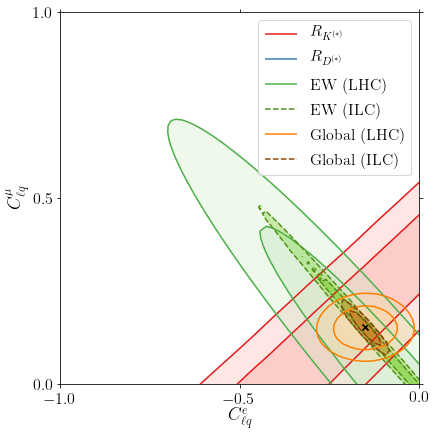
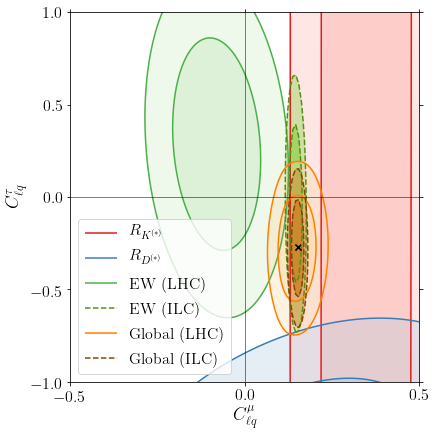
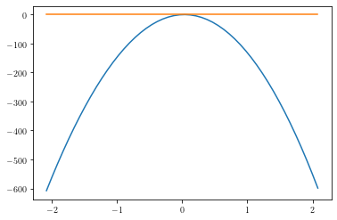
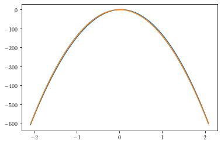
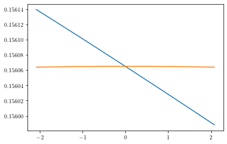
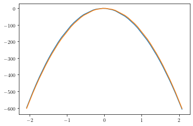
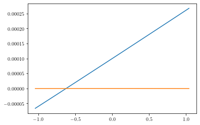
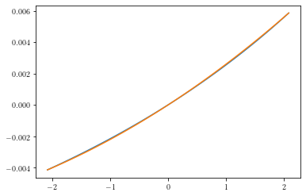

import SMEFT19
import numpy as np
import pandas as pd
from SMEFT19.plots import likelihood_plot
from collections import OrderedDict
from parscanning import GridScan
from SMEFT19.SMEFTglob import likelihood_fits
from SMEFT19.scenarios import scIV, scV, scVI, scXI
import flavio
import warnings
def read_meshgrid(fnames, stepx=50, stepy=50):
zdata_LHC = pd.read_csv(fnames[0], sep='\t')
zdata_ILC = pd.read_csv(fnames[1], sep='\t')
xcoords = np.linspace(zdata_LHC['x'].min(), zdata_LHC['x'].max(), stepx)
ycoords = np.linspace(zdata_LHC['y'].min(), zdata_LHC['y'].max(), stepy)
d = OrderedDict()
fitcodes = {r'$R_{K^{(*)}}$':'likelihood_lfu_fcnc.yaml', r'$R_{D^{(*)}}$':'likelihood_rd_rds.yaml', 'EW (LHC)':'likelihood_ewpt.yaml', 'eeWW':'likelihood_eeww.yaml', 'Global (LHC)':'global'}
for k, v in zip(fitcodes.keys(), fitcodes.values()):
z = np.array(zdata_LHC[v]).reshape(stepx, stepy)
d[k] = z
d['EW (ILC)'] = np.array(zdata_ILC[fitcodes['EW (LHC)']]).reshape(stepx, stepy)
d.move_to_end('Global (LHC)')
d['Global (ILC)'] = d['Global (LHC)'] - d['EW (LHC)'] + d['EW (ILC)']
d['EW (LHC)'] = d['EW (LHC)'] + d['eeWW']
d['EW (ILC)'] = d['EW (ILC)'] + d['eeWW']
d.pop('eeWW')
return (xcoords, ycoords, d)
ILC_green = (0.462745,0.803922,0.149020)
ILC_brown = (0.745098,0.392157,0.000000)
likelihood_plot(read_meshgrid(['../../likelihood/likelihood_IV.dat', '../../likelihood/likelihood_IV_ILC.dat']), -1.0, 0.0, 0.0, 1.0, [r'$C_{\ell q}^e$', r'$C_{\ell q}^\mu$'], locleg='upper right', colors=[0,1,2,ILC_green,4,ILC_brown], bf=[-0.1511,0.152], widths=[1.5,]*6, styles=['solid', 'solid', 'solid', 'dashed', 'solid', 'dashed'], fout='../../plots/scIV_ILC')

likelihood_plot(read_meshgrid(['../../likelihood/likelihood_V.dat', '../../likelihood/likelihood_V_ILC.dat']),
-0.5, 0.0, -1.0, 1.0, [r'$C_{\ell q}^e$', r'$C_{\ell q}^\tau$'], locleg='upper left',
colors=[0,1,2,ILC_green,4,ILC_brown], bf=[-0.1467,-0.2998], widths=[1.5,]*6,
styles=['solid', 'solid', 'solid', 'dashed', 'solid', 'dashed'], fout='../../plots/scV_ILC')
linewidths is ignored by contourf
likelihood_plot(read_meshgrid(['../../likelihood/likelihood_VI.dat', '../../likelihood/likelihood_VI_ILC.dat']),
-0.5, 0.5, -1.0, 1.0, [r'$C_{\ell q}^\mu$', r'$C_{\ell q}^\tau$'], locleg='lower left',
colors=[0,1,2,ILC_green,4,ILC_brown], bf=[0.152,-0.271], widths=[1.5,]*6,
styles=['solid', 'solid', 'solid', 'dashed', 'solid', 'dashed'], fout='../../plots/scVI_ILC')

SMEFT19.SMEFTglob.gl.likelihoods
{'likelihood_ewpt.yaml': <flavio.statistics.likelihood.Likelihood at 0x7efe729fa5e0>,
'likelihood_eeww.yaml': <flavio.statistics.likelihood.Likelihood at 0x7efe729a0370>,
'likelihood_lept.yaml': <flavio.statistics.likelihood.Likelihood at 0x7efe72a28d90>,
'likelihood_rd_rds.yaml': <flavio.statistics.likelihood.Likelihood at 0x7efe72a28a90>,
'likelihood_lfu_fccc.yaml': <flavio.statistics.likelihood.Likelihood at 0x7efe7ede71c0>,
'likelihood_lfu_fcnc.yaml': <flavio.statistics.likelihood.Likelihood at 0x7efe729fa7c0>,
'likelihood_bcpv.yaml': <flavio.statistics.likelihood.Likelihood at 0x7efe72a285e0>,
'likelihood_bqnunu.yaml': <flavio.statistics.likelihood.Likelihood at 0x7efe72a28fa0>,
'likelihood_lfv.yaml': <flavio.statistics.likelihood.Likelihood at 0x7efe72a28ac0>,
'likelihood_zlfv.yaml': <flavio.statistics.likelihood.Likelihood at 0x7efe72a28a60>,
'likelihood_higgs.yaml': <flavio.statistics.likelihood.Likelihood at 0x7efe72a28d60>}
len(SMEFT19.SMEFTglob.smelli.flavio.Measurement.instances)
263
n = 'scVII'
n[2:]
'VII'
r = 0.226745 * 256
g = 0.393921
import colorsys
hsl = colorsys.rgb_to_hls(r=0.226745, g=0.393921, b=0.073020)
hsl2 = (hsl[0], hsl[1]/0.7, hsl[2])
rgb2 = colorsys.hls_to_rgb(*hsl2)
rgb2
(0.32392142857142847, 0.5627442857142857, 0.1043142857142858)
import pandas as pd
df_LHC = pd.read_csv('../../likelihood/likelihood_IV.dat', sep='\t')
df_ILC = pd.read_csv('../../likelihood/likelihood_IV_ILC.dat', sep='\t')
df_LHC['global']
0 -2546.454763
1 -2403.120463
2 -2265.450131
3 -2133.456244
4 -2007.115995
...
2495 -1813.840130
2496 -1908.558394
2497 -2008.978772
2498 -2115.132436
2499 -2226.821316
Name: global, Length: 2500, dtype: float64
df_ILC['global']
0 -2549.358783
1 -2405.804599
2 -2267.928128
3 -2135.741551
4 -2009.221729
...
2495 -1815.392480
2496 -1910.127564
2497 -2010.569743
2498 -2116.749587
2499 -2228.469662
Name: global, Length: 2500, dtype: float64
import smelli
smelli.__path__
['/home/jorge/.local/lib/python3.8/site-packages/smelli']
gl = smelli.GlobalLikelihood(include_likelihoods=('likelihood_ewpt.yaml',))
from SMEFT19.scenarios import scVII
from SMEFT19.ellipse import load
dVII = load('../../ellipses/scVII.yaml')
glp = gl.parameter_point(scVII(dVII['bf']))
glp.log_likelihood_dict()
{'likelihood_ewpt.yaml': -1.18375346249449, 'global': -1.18375346249449}
import smelli
smelli.flavio.measurements.read_file('../../InputsILC/Input_scVII.yaml')
['ILC250']
gl = smelli.GlobalLikelihood(include_likelihoods=('likelihood_ewpt.yaml',), custom_measurements={'likelihood_ewpt.yaml':('ILC250',)})
from SMEFT19.scenarios import scVII
from SMEFT19.ellipse import load
dVII = load('../../ellipses/scVII.yaml')
glp = gl.parameter_point(scVII(dVII['bf']))
glp.log_likelihood_dict()
{'likelihood_ewpt.yaml': 0.27066520667663596, 'global': 0.27066520667663596}
dir(gl)
['_Nexp', '__class__', '__delattr__', '__dict__', '__dir__', '__doc__', '__eq__', '__format__', '__ge__', '__getattribute__', '__gt__', '__hash__', '__init__', '__init_subclass__', '__le__', '__lt__', '__module__', '__ne__', '__new__', '__reduce__', '__reduce_ex__', '__repr__', '__setattr__', '__sizeof__', '__str__', '__subclasshook__', '__weakref__', '_all_likelihoods', '_check_sm_cov_loaded', '_ckm_scheme', '_ckm_scheme_name', '_custom_likelihoods_dict', '_default_bases', '_fast_likelihoods_yaml', '_fast_likelihoods_yaml_fixckm', '_get_inspire_dict', '_get_yaml_path', '_likelihoods_yaml', '_load_likelihoods', '_log_likelihood', '_log_likelihood_sm', '_obstable_sm', '_par_dict_sm', '_sm_cov_loaded', 'basis', 'chi2_min', 'custom_likelihoods', 'eft', 'fast_likelihoods', 'fix_ckm', 'get_ckm_sm', 'get_wilson', 'likelihoods', 'load_exp_covariances', 'load_sm_covariances', 'log_likelihood_sm', 'make_measurement', 'number_observations_dict', 'obstable_sm', 'par_dict_default', 'par_dict_sm', 'parameter_point', 'plot_data_2d', 'save_exp_covariances', 'save_sm_covariances']
gl.likelihoods
{'likelihood_ewpt.yaml': <flavio.statistics.likelihood.Likelihood at 0x7f5bc6e58520>}
import SMEFT19
SMEFT19.SMEFTglob.gl.likelihoods
{'likelihood_ewpt.yaml': <flavio.statistics.likelihood.Likelihood at 0x7f02ff787430>,
'likelihood_eeww.yaml': <flavio.statistics.likelihood.Likelihood at 0x7f02ff7872b0>,
'likelihood_lept.yaml': <flavio.statistics.likelihood.Likelihood at 0x7f02ff81fdf0>,
'likelihood_rd_rds.yaml': <flavio.statistics.likelihood.Likelihood at 0x7f02ff81f460>,
'likelihood_lfu_fccc.yaml': <flavio.statistics.likelihood.Likelihood at 0x7f02ff7871c0>,
'likelihood_lfu_fcnc.yaml': <flavio.statistics.likelihood.Likelihood at 0x7f02fe045eb0>,
'likelihood_bcpv.yaml': <flavio.statistics.likelihood.Likelihood at 0x7f02fe045fd0>,
'likelihood_bqnunu.yaml': <flavio.statistics.likelihood.Likelihood at 0x7f02ff81fb20>,
'likelihood_lfv.yaml': <flavio.statistics.likelihood.Likelihood at 0x7f02ff81fd30>,
'likelihood_zlfv.yaml': <flavio.statistics.likelihood.Likelihood at 0x7f02ff81f670>,
'likelihood_higgs.yaml': <flavio.statistics.likelihood.Likelihood at 0x7f02ff81f640>}
SMEFT19.SMEFTglob.restart_smelli(include_likelihoods=['likelihood_ewpt.yaml',])
SMEFT19.SMEFTglob.gl.likelihoods
{'likelihood_ewpt.yaml': <flavio.statistics.likelihood.Likelihood at 0x7f033829da60>}
beta_obs = ['Ft(10C)', 'Ft(14O)', 'Ft(22Mg)', 'Ft(26mAl)', 'Ft(34Cl)', 'Ft(34Ar)', 'Ft(38mK)', 'Ft(38Ca)',
'Ft(42Sc)', 'Ft(46V)', 'Ft(50Mn)', 'Ft(54Co)', 'Ft(62Ga)', 'Ft(74Rb)']
SMEFT19.SMEFTglob.restart_smelli(include_likelihoods=['fast_likelihood_quarks.yaml'],
custom_likelihoods={'beta':beta_obs})
t0 = time.time()
SMEFT19.likelihood_fits([-0.15, 0.15], SMEFT19.scenarios.scIV)
tf = time.time()
print(tf-t0)
13.22279691696167
import time
dir(time)
['CLOCK_BOOTTIME', 'CLOCK_MONOTONIC', 'CLOCK_MONOTONIC_RAW', 'CLOCK_PROCESS_CPUTIME_ID', 'CLOCK_REALTIME', 'CLOCK_THREAD_CPUTIME_ID', '_STRUCT_TM_ITEMS', '__doc__', '__loader__', '__name__', '__package__', '__spec__', 'altzone', 'asctime', 'clock_getres', 'clock_gettime', 'clock_gettime_ns', 'clock_settime', 'clock_settime_ns', 'ctime', 'daylight', 'get_clock_info', 'gmtime', 'localtime', 'mktime', 'monotonic', 'monotonic_ns', 'perf_counter', 'perf_counter_ns', 'process_time', 'process_time_ns', 'pthread_getcpuclockid', 'sleep', 'strftime', 'strptime', 'struct_time', 'thread_time', 'thread_time_ns', 'time', 'time_ns', 'timezone', 'tzname', 'tzset']
time.time()
1638095086.1469584
time.time()
1638095093.756874
1638095093.756874-1638095086.1469584
7.609915733337402
13/20
0.65
def read_meshgrid2(fname, stepx=50, stepy=50):
zdata = pd.read_csv(fname[0], sep='\t')
zdata_beta = pd.read_csv(fname[1], sep='\t')
xcoords = np.linspace(zdata['x'].min(), zdata['x'].max(), stepx)
ycoords = np.linspace(zdata['y'].min(), zdata['y'].max(), stepy)
fitcodes = {r'$R_{K^{(*)}}$':'likelihood_lfu_fcnc.yaml', r'$R_{D^{(*)}}$':'likelihood_rd_rds.yaml',
'EW':'likelihood_ewpt.yaml', 'eeWW':'likelihood_eeww.yaml', 'Global':'global'}
d = OrderedDict()
for k, v in zip(fitcodes.keys(), fitcodes.values()):
z = np.array(zdata[v]).reshape(stepx, stepy)
d.update({k:z})
d['EW'] = d['EW'] + d['eeWW']
d[r'Nuclear $\beta$'] = np.array(zdata_beta['custom_beta']).reshape(stepx, stepy)
d.move_to_end('Global')
d.pop('eeWW')
return (xcoords, ycoords, d)
likelihood_plot(read_meshgrid2(['../../likelihood/likelihood_IV.dat', '../../likelihood/likelihood_IV_beta.dat']),
-2.0, 2.0, -2.0, 2.0, [r'$C_{\ell q}^e$', r'$C_{\ell q}^\mu$'], locleg='upper left',
colors=[0,1,2,3,4], bf=[-0.1511,0.152], widths=[1.5,]*5, fout='../../plots/scIVbeta')
linewidths is ignored by contourf
likelihood_plot(read_meshgrid2(['../../likelihood/likelihood_V.dat', '../../likelihood/likelihood_V_beta.dat']),
-1.0, 1.0, -2.0, 2.0,
[r'$C_{\ell q}^e$', r'$C_{\ell q}^\tau$'], locleg='upper right', colors=[0,1,2,3,4],
bf=[-0.1467,-0.2998], widths=[1.5,]*5, fout='../../plots/scV_beta')
No contour levels were found within the data range.
dfIV = pd.read_csv('../../likelihood/likelihood_IV_beta.dat', sep='\t')
dfIV.head()
| x | y | fast_likelihood_quarks.yaml | custom_beta | global | |
|---|---|---|---|---|---|
| 0 | -2.08 | -2.080000 | -1085.661268 | -607.901123 | -1085.661268 |
| 1 | -2.08 | -1.995102 | -1001.388771 | -560.632094 | -1001.388771 |
| 2 | -2.08 | -1.910204 | -920.932880 | -515.229345 | -920.932880 |
| 3 | -2.08 | -1.825306 | -844.299853 | -471.698775 | -844.299853 |
| 4 | -2.08 | -1.740408 | -771.438021 | -430.046299 | -771.438021 |
var_mu = dfIV.loc[1250:1299]
var_e = dfIV.loc[dfIV['y']==0.0424489795918368]
import matplotlib.pyplot as plt
plt.plot(var_mu.y, var_mu.custom_beta)
plt.plot(var_e.x, var_e.custom_beta)
[]

list(var_mu.custom_beta)[0]/list(var_mu.y)[0]**2
-140.49957014924857
list(var_mu.custom_beta)[-1]/list(var_mu.y)[-1]**2
-138.4169155537927
c_mu = (list(var_mu.custom_beta)[24]+list(var_mu.custom_beta)[25])/2
a_mu=((list(var_mu.custom_beta)[0]-c_mu)/list(var_mu.y)[0]**2+(list(var_mu.custom_beta)[-1]-c_mu)/list(var_mu.y)[-1]**2 )/2
a_mu
-139.40018746654277
plt.plot(var_mu.y, var_mu.custom_beta)
plt.plot(var_mu.y, a_mu*var_mu.y**2)
[]

c_e = (list(var_e.custom_beta)[24]+list(var_e.custom_beta)[25])/2
a_e=((list(var_e.custom_beta)[0]-c_e)/list(var_e.x)[0]**2+(list(var_e.custom_beta)[-1]-c_e)/list(var_e.x)[-1]**2 )/2
plt.plot(var_e.x, var_e.custom_beta)
plt.plot(var_e.x, a_e*var_e.x**2+c_e)
[]

var_e.iloc[25]
x 0.042449
y 0.042449
fast_likelihood_quarks.yaml 2.495179
custom_beta 0.156063
global 2.495179
Name: 1275, dtype: float64
var_diag = dfIV.loc[dfIV.x==dfIV.y]
var_diag.head()
| x | y | fast_likelihood_quarks.yaml | custom_beta | global | |
|---|---|---|---|---|---|
| 0 | -2.080000 | -2.080000 | -1085.661268 | -607.901123 | -1085.661268 |
| 51 | -1.995102 | -1.995102 | -1001.724197 | -560.630458 | -1001.724197 |
| 102 | -1.910204 | -1.910204 | -921.361430 | -515.226277 | -921.361430 |
| 153 | -1.825306 | -1.825306 | -844.592657 | -471.694471 | -844.592657 |
| 204 | -1.740408 | -1.740408 | -771.379741 | -430.040944 | -771.379741 |
plt.plot(var_diag.x, var_diag.custom_beta)
plt.plot(var_diag.x, a_mu*var_diag.x**2+a_e*var_diag.y**2+c_e)
[]

var_adiag = dfIV.loc[dfIV.x==-dfIV.y]
plt.plot(var_adiag.x, var_adiag.custom_beta)
plt.plot(var_adiag.x, a_mu*var_adiag.x**2+a_e*var_adiag.y**2+c_e)
[]

dfV = pd.read_csv('../../likelihood/likelihood_V_beta.dat', sep='\t')
var_e_V = dfV.loc[dfV['y']==0.0424489795918368]
var_tau = dfV.loc[1250:1299]
plt.plot(var_e_V.x, var_e_V.custom_beta)
plt.plot(var_e_V.x, a_e*var_e_V.x**2)
[]

a_tau=((list(var_tau.custom_beta)[0])/list(var_tau.y)[0]**2+(list(var_tau.custom_beta)[-1])/list(var_tau.y)[-1]**2 )/2
b_tau = ((list(var_tau.custom_beta)[0])/list(var_tau.y)[0]+(list(var_tau.custom_beta)[-1])/list(var_tau.y)[-1])/2
plt.plot(var_tau.y, var_tau.custom_beta)
plt.plot(var_tau.y, a_tau*var_tau.y**2+b_tau*var_tau.y)
[]

def beta_VI(x):
mu = x[0]
tau = x[1]
return a_mu * mu**2 + a_tau * tau**2 + b_tau * tau
xmin = -1.0
xmax = 1.0
ymin = -2.0
ymax = 2.0
xmargin = 0.02*(xmax-xmin)
ymargin = 0.02*(ymax-ymin)
GS = GridScan(beta_VI, [xmin-xmargin, ymin-ymargin], [xmax+xmargin, ymax+ymargin], 50)
with warnings.catch_warnings():
warnings.simplefilter('ignore')
GS.run_mp(4)
GS.save_csv('../../likelihood/likelihood_VI_beta.dat')
def beta_XI(x):
e = x[0]
mu = -x[0]
tau = x[1]
return a_e * e**2 + a_mu * mu**2 + a_tau * tau**2 + b_tau * tau
xmin = -1.0
xmax = 1.0
ymin = -2.0
ymax = 2.0
xmargin = 0.02*(xmax-xmin)
ymargin = 0.02*(ymax-ymin)
GS = GridScan(beta_XI, [xmin-xmargin, ymin-ymargin], [xmax+xmargin, ymax+ymargin], 50)
with warnings.catch_warnings():
warnings.simplefilter('ignore')
GS.run_mp(4)
GS.save_csv('../../likelihood/likelihood_XI_beta.dat')